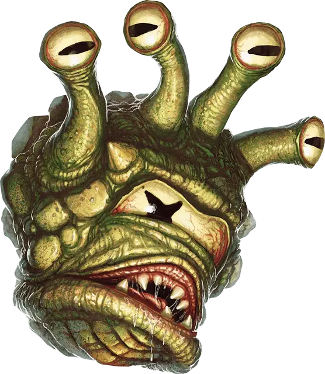

Смотрящий
Gazer
Крошечная Аберрация, нейтрально-злая

Класс Доспеха 13
Хиты 13 (3к4 + 6)
Скорость 0 футов, летая 30 футов (парит)
| мод | спас | ||
|---|---|---|---|
| СИЛ | 3 | −4 | −4 |
| ЛОВ | 17 | +3 | +3 |
| ТЕЛ | 14 | +2 | +2 |
| мод | спас | ||
|---|---|---|---|
| ИНТ | 3 | −4 | −4 |
| МДР | 10 | +0 | +2 |
| ХАР | 7 | −2 | −2 |
Навыки Восприятие +4, Скрытность +5
Иммунитет к состояниям сбивание с ног
Чувства тёмное зрение 60 футов, пассивное Восприятие 14
Опасность 1/2 (100 опыта)
Бонус мастерства +2
Среда обитания Подземье
Особенности
Агрессивный. Бонусным действием Смотрящий может двигаться на количество футов равное его скорости в направлении видимого им враждебного существа.
Мимикрия. Смотрящий может подражать звукам речи, которую когда–либо слышал, на любом языке. Существо, которое слышит эти звуки, может определить, что это имитация при успешной проверке Мудрости (Проницательности) Сл 10.
Фамильяр–смотрящий. Заклинатели, заинтересованные в необычных фамильярах, обнаруживают, что смотрящие готовы служить кому–то с магической силой, особенно тому, кто любит издеваться и измываться над другими. Смотрящий ведет себя агрессивно по отношению к существам меньше себя и старается иногда нападать на домашних питомцев, животных на ферме или даже детей в городе, если только хозяин не очень строг. Смотрящий, служащий фамильяром, имеет следующую черту.
Фамильяр. Смотрящий может служить другим существам фамильяром, формируя телепатическую связь со своим хозяином, при условии, что хозяин – заклинатель не ниже 3-го уровня. Пока двое связаны, хозяин может почувствовать то, что чувствует смотрящий, если они находятся не далее 1 мили друг от друга. Если хозяин причиняет ему физический вред, то смотрящий перестает служить фамильяром, прерывая телепатическую связь.
Действия
Укус. Рукопашная атака оружием: +5 к попаданию, досягаемость 5 футов, одна цель. Попадание: 1 колющего урона.
Лучи из глаз. Смотрящий выстреливает двумя случайными магическими лучами из глаза (перебрасывайте повторы), выбирая одну или две цели не далее 60 футов от себя, которые может видеть:
• 1. Изумляющий луч. Целевое существо должно преуспеть в спасброске Мудрости Сл 12 или стать очарованным до начала следующего хода смотрящего. Пока цель очарована таким образом, её скорость уменьшена вдвое, и она получает помеху на броски атаки
• 2.Луч страха. Целевое существо должно преуспеть в спасброске Мудрости Сл 12 или стать испуганной до начала следующего хода смотрящего.
• 3.Морозный луч. Целевое существо должно преуспеть в спасброске Ловкости Сл 12 или получить 10 (3к6) урона холодом.
• 4. Телекинетический луч. Если цель является Средним существом или меньше, то она должна преуспеть в спасброске Силы Сл 12 или будет перемещена на расстояние до 30 фт по прямой от смотрящего. Если цель – объект весом менее 10 фунтов, который ни на ком не надет и его никто не несет, то смотрящий может переместить его до 30 футов в любом направлении. Смотрящий также может управлять объектами таким лучом, например пользоваться простым инструментом или открыть контейнер.
Описание
В Зияющем Портале я повстречал волшебницу, у которой был питомец – крошечный бехолдер. Она называла его глазун. Когда я подобрался поближе, чтобы его потрогать, то существо ударило меня своим лучом из глаз и я ударился о стену с такой силой, что чуть не пролил свой эль.
– Воло
Смотрящий – это крошечное проявление снов бехолдеров. Он напоминает бехолдера, который вызвал его существование, но его тело всего 8 дюймов в ширину и имеет только четыре глазных стебелька. Он следует за создателем как преданная агрессивная собачонка и иногда небольшие своры эти существ патрулируют логово своего хозяина, убивают вредителей и достают одиноких существ.
Неприятный питомец. Смотрящий не может говорить ни на одном языке, но могут примерно мимикрировать слова и предложения писклявой пародией. Бехолдеры считают смотрящих забавными и терпят их присутствие как испорченных питомцев. Смотрящего не может приручить никто кроме его создателя, за исключением использования магии или связывания с заклинателем (смотри врезку). Некоторые бехолдеры с волшебниками–приспешниками настаивают, чтобы волшебник взял смотрящего в качестве фамильяра, потому что могут видеть глазами этих существ.
Агрессивный поедатель вредителей. Дикий смотрящий (живущий отдельно от бехолдера) является территориальным существом, ест жуков и маленьких животных и известно, что любит играть с едой. Одинокий смотрящий избегает драк со Средними или ещё более крупными существами, но их свора может позариться и на большую добычу. Смотрящий может следовать за гуманоидом на своей территории, шумно подражая их речи и в общем ведя себя неприятно, но сбегает, если на него нападает кто–то, кого он не может убить.